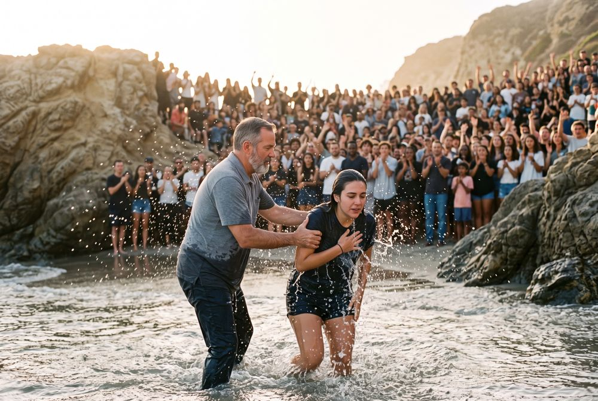

BAPTIZE3 / 5
02 · The water · Burial
He suffered death and was buried.
What did you experience during baptism?
Maybe a feeling, a thought, an impression, or a sense of God's presence. Whatever it was for you.
About 30 seconds is enough.
Next